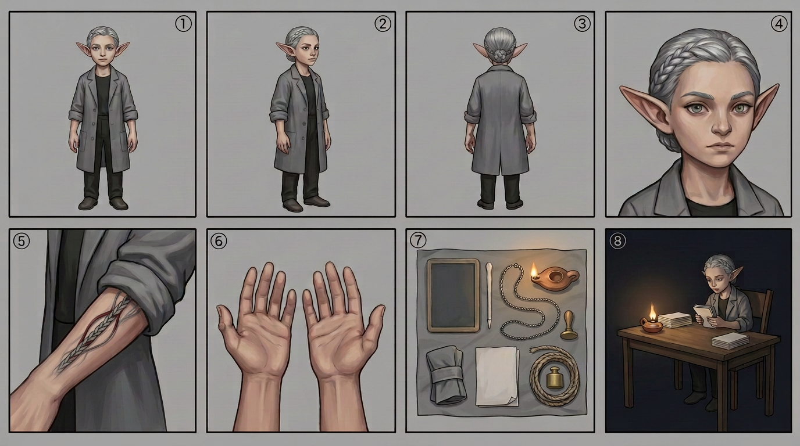

NIMA — model sheet
Chapter 010 · first appearance. The drawing reference for every page this character is on — the eight required panels — front · side · back · face · detail · hands · kit · action, in the house panel order, per the character art spec.

🔍 click to zoom
1front2side3back4face5detail (the wrist turned inward — the school's strand under an office cuff)6hands (thumb callus, two old burns, no ink)7kit (blank slate tablet, bone stylus, office counting chain, blank-dial brass instrument, clay oil lamp, sleeve band, blank paper, coiled cord)8action (at the wooden desk by oil lamp — a slab held turned away, the chair opposite empty)
Drawing brief
- Silhouette: small and non-descript on purpose — the Office's grey is a size that fits nobody, and she wears it the way a girl wears a coat issued to a taller person. A short braid, pinned flat.
- Hands: a mender's hands. Callus at the thumb, two old burns, one knuckle thickened by years of teaching herself to hold a needle quietly. No ink stains: she is trained never to write.
- The tell: she turns her left wrist inward, against her leg or under the desk, whenever a palm is being read or a sleeve is rolled. The braid is the school's, and it is the one thing about her the Office would have to enter if it ever saw it.
- Face: careful, attentive, deliberately unreadable — the face of a person who has been trained that the finding, not the reason is what gets written down.
Full written sheet, canon rules and card-game line: Nima